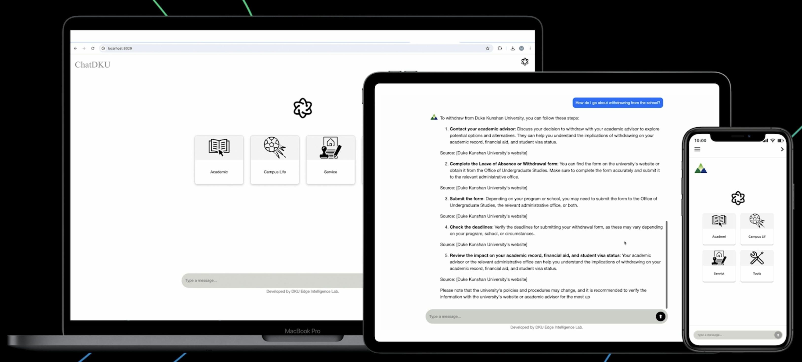
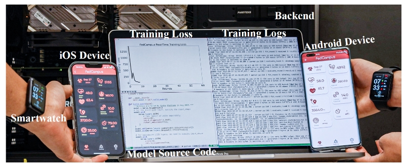
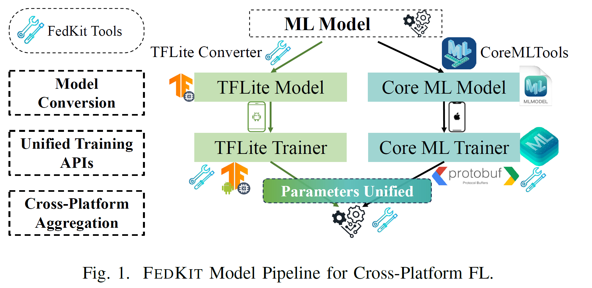
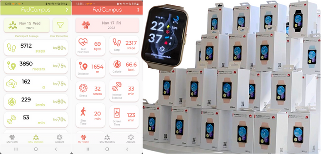
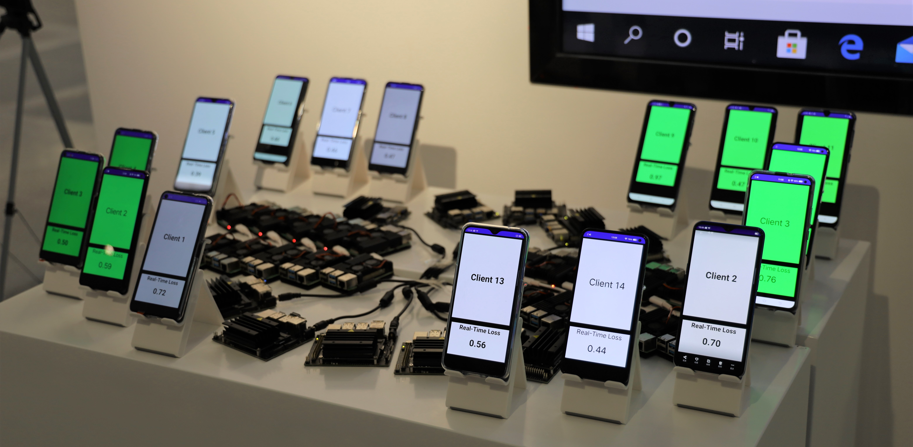
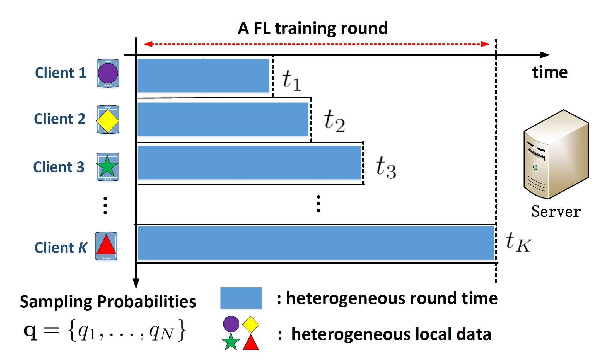
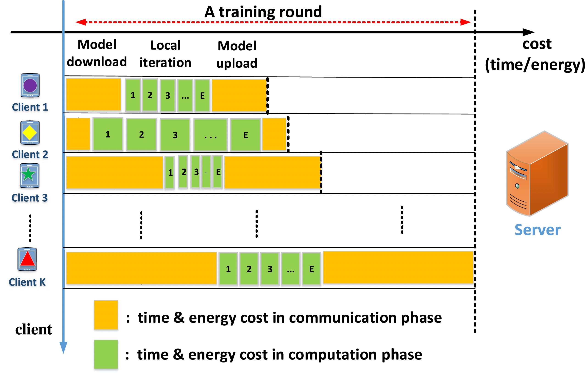
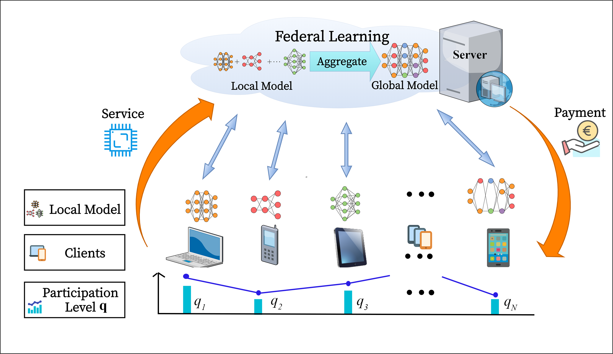
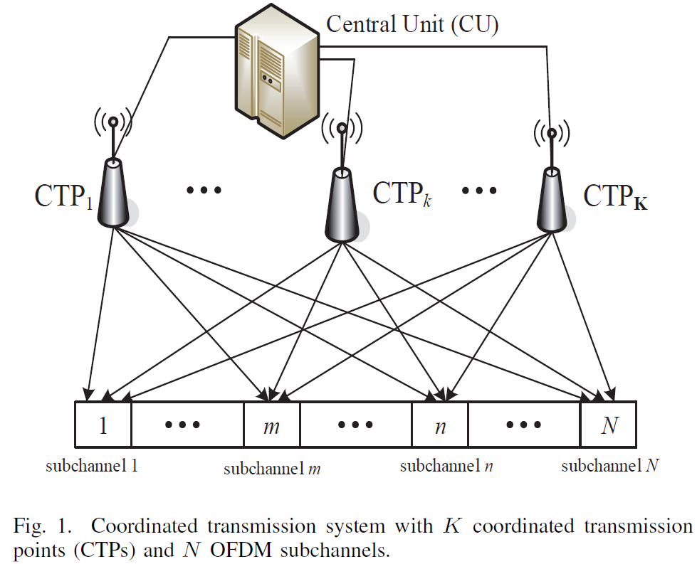
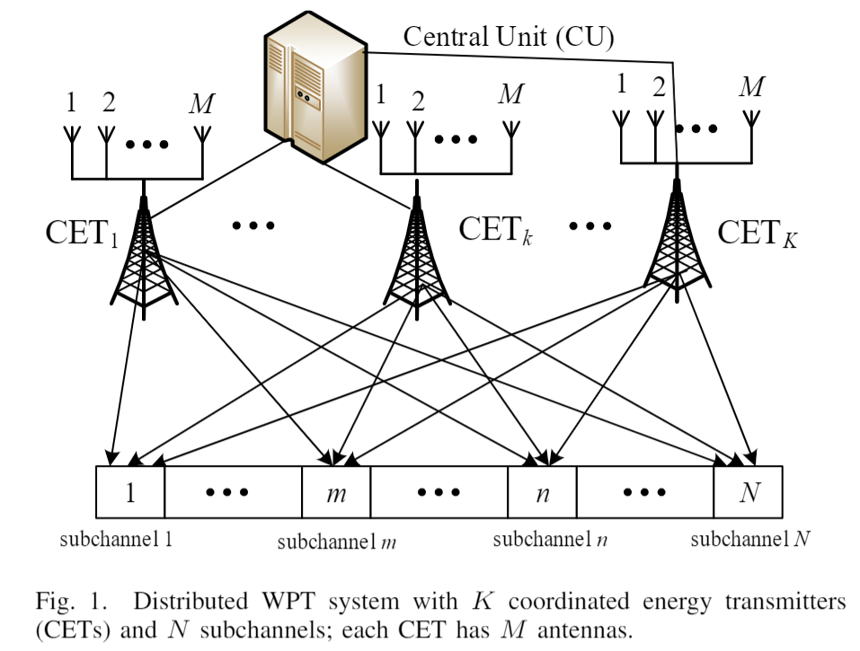

Bing Luo (罗冰)
|
Assistant Professor of Data and Computational Science, Duke Kunshan University Email: bl291 [at] duke.edu
Biography：
Research Interests： |
Recruiting
I have multiple postions for PhD (Degree of Wuhan University), research assistant and visiting intern.
Interested applicants (majoring in EE/CS or related) with strong mathematical and machine learning backgrounds, please email me your CV, transcript, awards, and publications (if any) at bl291@duke.edu.
News
[Mar. 2025] Our survey paper on "Federated Foundation Models" has been accepted to IEEE Transactions on Knowledge and Data Engineering (TKDE). This is a joint work with multiple universities and led by WeBank.
[Mar. 2025] Our paper on "Strategic Prompt Pricing for AIGC Services" got accepted to WiOpt 2025. This is a joint work with my collaborators at CUHKSZ, led by my long-term co-supervised PhD student Xiang Li.
[Mar. 2025] Our tutorial proposal “Enabling On-Device Federated Learning at the Edge: Theory, Mechanisms, Systems, and Applications” got accepted at IEEE ICDCS 2025.
[Feb. 2025] Our tutorial proposal“Advancing Federated Learning in Practice: From Theory to Real-World Edge Applications”got accepted at IEEE ICMLCN 2025.
[Jan. 2025] Our proposal on AIGC for Game Development has been awarded funding from THE DUKE UNIVERSITY PROVOST FUND for Duke-DKU Collaborations.
[Dec. 2024] Our work on “Client-level Fairness for LDP Federated Learning” got accepted in IEEE Transactions on Mobile Computing (TMC). This is a joint work with my collaborator and supervised student intern at Wuhan University.
[Nov. 2024] Invited talk on ChatDKU at the GenAI Innovation Day - Application of GenAI in Education and Research, organized by CCF YOCSEF Shanghai.
[Nov. 2024] We are excited to announce the launch of ChatDKU — an LLM-based RAG-agent AI chatbot designed for the Duke Kunshan University (DKU) community. For more details, please refer to our demo video at Youtube, Bilibili, and research highlights.
[Oct. 2024] I delivered a talk on Federated Learning at Yale University, hosted by Postdoc Advisor Prof. Leandros Tassiulas.
[Oct. 2024] I will give an invited talk at the Trustworthy Federated Learning Camp organized by WeBank and SJTU in Shanghai.
[Oct. 2024] Our Demo work "Privacy-Preserving Room Occupancy Estimation Using Federated Analytics of BLE Packets" got accepted at ACM SenSys 2024 Demo Session. Congratulations to DKU undergraduate students Boyan Zhang and Chenshuhao Qin on this system project.
[Sep. 2024] I delivered a talk on Federated Learning at Hong Kong University, hosted by Prof. Xianhao Chen.
[Sep. 2024] I delivered a talk on Federated Learning at Purdue University, hosted by Prof. Christopher Brinton.
[Sep. 2024] I delivered an invited talk in the Distributed Machine Learning Session at the 60th Annual Allerton Conference 2024.
[Aug. 2024] Our paper, "Fed-MUnet: Multi-modal Federated U-Net for Brain Tumor Segmentation," has been accepted at IEEE HealthCom 2024. Congratulations to my supervised DKU intern and undergraduate student. This is also an interdisciplinary collaboration with faculty member in Medical Physics at DKU.
[Aug. 2024] Our Demo paper "Demo: FedCampus: A Real-world Privacy-preserving Mobile Application for Smart Campus via Federated Learning & Analytics" got accepted at ACM MobiHoc 2024. Congratulations to my supervised DKU interns and undergraduate students. Demo video is available on both YouTube and Bilibili.
[July 2024] Our paper "Social Welfare Maximization for Federated Learning with Network Effects" was accepted to ACM MobiHoc 2024. This is a joint work with my collaborators at CUHKSZ, led by my long-term co-supervised PhD student Xiang Li.
[July. 2024] We organized the "Tech4Good: Economic and Computational Advances in Distributed Systems" workshop at the 44th IEEE International Conference on Distributed Computing Systems (ICDCS) 2024 in New Jersey.
[June 2024] One paper got accepted to the FedKDD'24 workshop, and one got accepted to APNet'24. Both works study the Hedonic Coalition Formation Game in Federated Systems with my collaborators at Wuhan University.
[May. 2024] Received DKU-Duke Travel Grant to support my travel to Duke University in the coming year.
[May. 2024] Received Hou Tu Research (HTR) Fund from DKU Foundation, to support my interdisciplinary research with Wuhan University.
[Apr. 2024] Three of my supervised DKU undergraduate teams have won 2024 Student Innovation and Entrepreneurship (Dachuang) Project funding — two at the National level and one at the Provincial level. Congratulations to the teams!
[Apr. 2024] Our paper "Tackling System-Induced Bias in Federated Learning: A Pricing-based Incentive Mechanism" got accepted in IEEE ICDCS 2024, Federated Learning Track. This is a joint work with student and faculty at SUSTech.
[Mar. 2024] Our paper "Optimal Mechanism Design for Heterogeneous Client Sampling in Federated Learning" got accepted in IEEE Transactions on Mobile Computing (TMC). This is a joint work with SYSU and ZJU-UIUC.
[Mar. 2024] I delivered a talk on Federated Learning at Imperial College London, hosted by Prof. Kin Leung.
[Mar. 2024] We presented our FedCampus and FedKit projects at the Flower AI Summit 2024, one of the world's largest Federated Learning conference, in London, UK.
[Mar. 2024] Our paper on federated unlearning got accepted in Privacy Regulation and Protection in Machine Learning Workshop at ICLR 2024 (PML-ICLR' 24).
[Feb. 2024] My lab organized a Generative AI field trip at AWS Shanghai, with details can be found here.
[Feb. 2024] Our paper "Adaptive Heterogeneous Client Sampling for Federated Learning over Wireless Networks" got accepted at IEEE Transactions on Mobile Computing (TMC).
[Feb. 2024] Our work "FedKit: Enabling Cross-Platform Federated Learning for Android and iOS" got accepted at IEEE INFOCOM 2024 Demo. Congratulations to my supervised DKU undergraduate students Sichang He (lead), Beilong Tang, and Boyan Zhang on this system. Demo video is available on both YouTube and Bilibili. Details refer to research highlights.
[Feb. 2024] Delighted to have been elevated to IEEE Senior Memeber.
[Jan. 2024] Two FL papers got accepted in ICC 2024, one on "Client Sampling in Wireless Networks"; one on "Federated Unlearning".
Before 2024
[Dec. 2023] One paper on "Personalized LDP for FL" got accepted in ICASSP 2024, collaborative work in supervising undergraduate students at ZJU-UIUC.
[Nov.2023] We recently launched Fedcampus Project: a privacy-preserving cross-platform (Android and iOS) smart campus application, powered by federated anlaytics and differential privacy. Details refer to research highlights.
[Oct. 2023]. My lab successfully held the 1st DKU AWS DeepRacer Self-Driving Competition, with details can be found here.
[Jun. 2023] Our paper on differential private federated analytics has been accepted by Federated Learning and Analytics in Practice: Algorithms, Systems, Applications, and Opportunities(FL-ICML'23). Congratulations to my supervised CUHKSZ undergraduate student Jiaqi Shan.
[May. 2023] Our paper on federated reinforcement learning for robotics has been accepted by ICDCS 2023 Demo and Poster program. Congratulations to my supervised CUHKSZ undergraduate students Wenli Xiao (admitted by CMU Robotics Institute) and Tingwei Ye(now in NYU)!
[Apr. 2023] Our paper on incentivizing unbiased federated learning has been accepted to ICDCS 2023 (Track on AI for Distributed Systems and Distributed Systems for AI)
[Mar. 2023] Our paper "Optimization Design for Federated Learning in Heterogeneous 6G Networks" got accepted in IEEE Network, Special Issue on 6G Network AI Architecture for Customized Services and Applications, 2023.
[Sep. 2022] I joined Duke Kunshan University (DKU) as a Tenure-Track Assistant Professor.
Research Highlights
ChatDKU: A Powerful RAG-Agent Chatbot tailored for DKU
|
|
|  |
|  | FedKit: Enabling Cross-Platform Federated Learning for Android and iOS
|
|  |
|  | FedCampus: A Privacy-Preserving Data Platform for Smart Campus
|

|
Optimization and System Development for Federated Learning in Mobile and IoT Networks
|
|  |
|  |
I. Adaptive Client Sampling for Federated Learning
|
|  |
II. Cost-Effective Federated Learning Design
|
|  |
Game-Theoretic Incentive Mechanism for Unbiased Federated Learning
|


|
Federated Reinforcement Learning for Robotics
|
|  | Resource Optimization for Distributed Coordinated Multi-Point (CoMP) Systems
|
|  | Resource Optimization for Distributed Cooperative Wireless Energy Harvesting Systems
|
Publications (Note: Student co-authors (co-)supervised by me are underlined)
Journal Papers
T. Fan, et al. "Ten Challenging Problems in Federated Foundation Models," in IEEE Transactions on Knowledge and Data Engineering (TKDE), 2025
C. Hu, N. Wu, X. Liu, B. Luo, Y. Wang, J. Jiang, D. Cheng, “PriFairFed: A Local Differentially Private Federated Learning Algorithm for Client-Level Fairness,”accepted in IEEE Transactions on Mobile Computing (TMC), 2024
G. Liao‡, B. Luo‡, Y. Feng, M. Zhang*, X. Chen, “Optimal Mechanism Design for Heterogeneous Client Sampling in Federated Learning” accepted in IEEE Transactions on Mobile Computing (TMC), 2024
-
B. Luo, W. Xiao, S. Wang, J. Huang, L. Tassiulas, “Adaptive Heterogeneous Client Sampling for Federated Learning over Wireless Networks,”accepted in IEEE Transactions on Mobile Computing (TMC), 2024.
-
B. Luo, P. Han, P. Sun, X. Ouyang, J. Huang and N. Ding, "Optimization Design for Federated Learning in Heterogeneous 6G Networks," in IEEE Network, vol. 37, no. 2, pp. 38-43, March/April 2023
B. Luo, PL. Yeoh, R. Schober and B. Krongold, “Distributed Energy Beamforming for Wireless Power Transfer over Frequency-Selective Fading Channels,” in IEEE Transactions on Green Communications and Networking, vol. 6, no. 4, pp. 2100-2114, Dec. 2022.
B. Luo, PL. Yeoh, and B. Krongold, “Structural Properties of Optimal Power Allocation for DAS-OFDM under Joint Total and Individual Power Constraints,” IEEE Transactions on Green Communications and Networking, vol. 6, no. 1, pp. 530-542, March 2022.
-
B. Luo, X. Li, S. Wang, J. Huang and L. Tassiulas, "Cost-Effective Federated Learning in Mobile Edge Networks," in IEEE Journal on Selected Areas in Communications, vol. 39, no. 12, pp. 3606-3621, Dec. 2021.
B. Luo, PL. Yeoh, and B. Krongold, “Optimal Co-Phasing Power Allocation and Capacity of Coordinated OFDM Transmission with Total and Individual Power Constraints,” IEEE Transactions on Communications, vol. 67, no. 10, pp. 7103-7113, Oct. 2019.
B. Luo, Q. Cui, and X. Tao, “Optimal Joint Water-Filling for Coordinated Transmission over Frequency-Selective Fading Channels,” IEEE Communication Letters, vol.15, no.2, pp.190-192, Feb. 2011.
B. Luo, Q. Cui, X. Tao, and P. Zhang, “Closed Form Solutions of Joint Water-Filling for Coordinated Transmission,” IEICE Transactions on Communications, vol. 93-B, no. 12, pp. 3461-3468, Jan. 2010.
Q. Cui, B. Luo, X. Huang and A.A. Dowhuszko, “Closed Form Solution for Minimizing Power Consumption in Coordinated Transmissions,” EURASIP Journal on Wireless Communications and Networking, vol. 2012, no. 122, Mar. 2012.
Q. Cui, X. Huang, B. Luo and X. Tao, “Capacity Analysis and Optimal Power Allocation for Coordinated MIMO-OFDM Systems,” Science China Information Sciences, vol. 55, no. 6, pp.1372-1378, Jun. 2012.
Conference Papers
(peer-reviewed, including workshops, posters and demos)- X. Li, B. Luo, J. Huang, Y. Luo, "Strategic Prompt Pricing for AIGC Services: A User-Centric Approach," in International Symposium on Modeling and Optimization in Mobile, Ad Hoc, and Wireless Networks (WiOpt), 2025
- B. Zhang, C. Qin, B. Luo,“Demo: Privacy-Preserving Room Occupancy Estimation Using Federated Analytics of BLE Packets” in ACM Conference on Embedded Networked Sensor Systems (SenSys), Nov. 2024.
- R. Zhou, L. Qu, L. Zhang, Z. Li, H. Yu, B. Luo, "Fed-MUnet: Multi-modal Federated Unet for Brain Tumor Segmentation" in Proc. IEEE International Conference on E-health Networking, Application & Services (Healthcom), Nov. 2024.
- J. Geng, B. Tang, B. Zhang, J. Shao, B. Luo, “Demo: FedCampus: A Real-world Privacy-preserving Mobile Application for Smart Campus via Federated Learning & Analytics” in Proc. ACM International Symposium on Mobile Ad Hoc Networking and Computing (MobiHoc), Oct. 2024.
- X. Li, Y. Luo, B. Luo, J. Huang, “Social Welfare Maximization for Federated Learning with Network Effects," in Proc. ACM International Symposium on Mobile Ad Hoc Networking and Computing (MobiHoc), Oct. 2024.
- Y. Gong, B. Luo, C. Hu, D. Cheng, "An Overlapping Coalition Game for Individual Utility Maximization in Federated Learning," in FedKDD: International Joint Workshop on Federated Learning for Data Mining and Graph Analytics, in Conjunction with ACM SIGKDD, Aug. 2024
- Z. He, T. Tu, KY. Wang, B. Luo, D. Cheng, C. Hu,“Federated Spectrum Management Through Hedonic Coalition Formation,”in Proc. Asia-Pacific Workshop on Networking (APNet), Aug, 2024
- S. Wang, B. Luo, M. Tang, “Tackling System-Induced Bias in Federated Learning: A Pricing-based Incentive Mechanism,” Proc. IEEE International Conference on Distributed Computing Systems (ICDCS), Jul. 2024.
- J. Shao, T. Lin, X. Cao, B. Luo, “Federated Unlearning: a Perspective of Stability and Fairness,” in Privacy Regulation and Protection in Machine Learning Workshop, in Conjunction with ICLR 2024 (PML-ICLR' 24), May, 2024
- W. Zhu, J. Jia, B. Luo, X. Lin,“Federated Unlearning with Multiple Client Partitions” in IEEE International Conference on Communications (ICC) Jun. 2024
- J. Geng, Y. Hou, X. Tao, J. Wang, B. Luo, “Adaptive Federated Learning in Heterogeneous Wireless Networks with Independent Sampling,”in IEEE International Conference on Communications (ICC), Jun. 2024
- S. He, B. Tang, B. Zhang, J. Shao, X. Ouyang, D. Nata, B. Luo, “Demo: FedKit: Enabling Cross-Platform Federated Learning for Android and iOS,” in IEEE International Conference on Computer Communications (INFOCOM), May 2024.
- Y. Chen, W. Xu, X. Wu, M. Zhang, B. Luo, “Personalized Local Differentially Private Federated Learning with Adaptive Client Sampling,” in IEEE International Conference on Acoustics, Speech, and Signal Processing (ICASSP), Apr. 2024.
- W. Xiao, T. Ye, B. Luo, J. Huang, "FedRos - Federated Reinforcement Learning for Networked Mobile-Robot Collaboration", accepted in Proc. IEEE International Conference on Distributed Computing Systems (ICDCS) Poster and Demo Session, Jul. 2023.
B. Luo, Y. Feng, S. Wang, J. Huang, L. Tassiulas, “Incentive Mechanism Design for Unbiased Federated Learning with Randomized Client Participation”, accepted in Proc. IEEE International Conference on Distributed Computing Systems (ICDCS), 2023.
B. Luo, W. Xiao, S. Wang, J. Huang, L. Tassiulas, “Tackling System and Statistical Heterogeneity for Federated Learning with Adaptive Client Sampling”, in Proc. IEEE International Conference on Computer Communications (INFOCOM), 2022.
B. Luo, X. Li, S. Wang, J. Huang, L. Tassiulas, “Cost-Effective Federated Learning Design,” in Proc. of IEEE International Conference on Computer Communications (INFOCOM), 2021.
B. Luo, PL. Yeoh, R. Schober and B. Krongold, “Optimal Frequency-Selective Energy Beamforming with Joint Total and Individual Power Constraints”, in Proc. IEEE Global Communications Conference (GLOBECOM), Waikoloa, HI, USA, December, 2019.
B. Luo, PL. Yeoh and B. Krongold, “Optimal Power Allocation for DAS-OFDM under Joint Total and Individual Power Constraints,” in Proc. IEEE Global Communications Conference (GLOBECOM), Waikoloa, HI, USA, December, 2019.
B. Luo, PL. Yeoh, R. Schober and B. Krongold, “Optimal Energy Beamforming for Distributed Wireless Power Transfer over Frequency-Selective Channels,” in Proc. IEEE International Conference on Communications (ICC), Shanghai, China, May 2019.
B. Luo, PL. Yeoh, and B. Krongold, “Optimal Co-phasing Power Allocation for Coordinated OFDM Transmission,” in Proc. IEEE International Conference on Communications (ICC), Paris, France, Jun. 2017.
B. Luo, Q. Cui, X. Tao, and A.A. Dowhuszko, “On the Optimal Power Allocation for Coordinated Wireless Backhaul in OFDM Based Relay Systems,” in Proc. IEEE International Conference on Communications (ICC), Budapest, Hungary, Jun. 2013.
B. Luo, Q. Cui, and X. Tao, “Constant-Power Joint Water-filling for Coordinated Transmission,” in Proc. IEEE Global Communications Conference (GLOBECOM), Houston, US, Dec. 2011.
B. Luo, Q. Cui, H. Wang, and X. Tao, “Optimal Joint Water-filling for OFDM Systems with Multiple Cooperative Power Sources,” in Proc. IEEE Global Communications Conference (GLOBECOM), Miami, US, Dec. 2010.
Q. Cui, B. Luo, and X. Huang, “Joint Power Allocation Solutions for Power Consumption Minimization in Coordinated Transmission System,” in Proc. IEEE Global Communications Conference (GLOBECOM) Workshop on Multi-Cell Cooperation, Houston, US, Dec. 2011.
Teaching
Undergraduate Course
-
COMPSCI 204: Introduction to Artificial Intelligence (Spring 2025).
-
CS 101: Introduction to Computer Science (Fall 2022, 2023, 2024, Spring 2024).
-
CS 401: Cloud Computing (Spring 2023).
Graduate Course
-
ECE 586: Vector Space Methods with Applications (Spring 2023, 2024, 2025).
Services
Conference (Technical) Program Committee Member
ICLR’25 SynthData Workshop
ICML 2025
ACM MobiHoc 2025
AISTATS 2025
NeurIPS 2024
ECAI 2024,2025
IEEE ICC 2020-2025
IEEE GLOBECOM 2020-2025
IEEE ICDCS 2023,2024
IEEE EDGE 2024 (senior PC)
IFIP NPC 2024
ICLR-Privacy Regulation and Protection in Machine Learning Workshop 2024
NeurIPS - Federated Learning Workshop 2022,2023
ICML- Federated Learning Workshop 2021, 2023
AAAI- Federated Learning Workshop 2022
IJCAI- Federated Learning Workshop 2022
Journal Reviewer
IEEE Journal on Selected Areas in Communications (JSAC)
IEEE Transactions on Communications (TCOM)
IEEE Transactions on Wireless Communications (TWC)
IEEE/ACM Transactions on Networking (ToN)
IEEE Transactions on Mobile Computing (TMC)
IEEE Transactions on Green Communications and Networking (TGCN)
-
IEEE Transactions on Cognitive Communications and Networking (TCCN)
-
IEEE Transactions on Network Science and Engineering (TNSE)
IEEE Transactions on Neural Networks and Learning Systems (TNNLS)
ACM Transactions on Intelligent Systems and Technology (TIST)
Organizing Committee Member
-
Co-Organizer of Tech for Good: Economic and Computational Advances in Distributed Systems Workshop at IEEE ICDCS 2024
Selected Awards
Joint Postdoctoral Fellowship, AIRS, CUHK(SZ) and Yale University (2020-2022)
Melbourne Research Scholarship, Melbourne University (2016-2019)
Kenneth Myers Memorial Scholarship, Melbourne University (2018-2019) (only one recipient every two years)
Robert Bage Memorial Scholarship, Melbourne University (2017)
Technical Innovation Expert Award, China Mobile (2015)
Advanced LTE Technology Professionals Award, China Mobile (2014)
Wu Tong Communications. Co., Ltd, Scholarship (2012)
National First Grade Scholarship (2011)
Meritorious Winner 24th US Mathematical Contest in Modeling (2008)